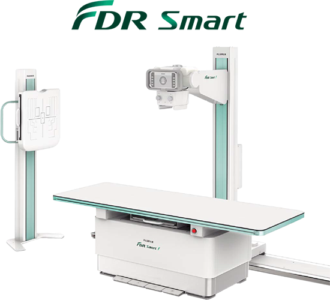

FDR Smart

DESCRIPCIÓN:
Sistema de rayos X diseñado para diagnosticar el cuerpo humano proporcionando imagen radiográfica con estructura anatómica.
CARACTERÍSTICAS:
- Instalación fácil.
- Simple y compacto.
- Se puede combinar con sistemas CR y DR.
- Ofrece una amplia gama de configuraciones (generadores, tubos de rayos X, tipo de mesa, accesorios).
Componentes del Sistema:
a. Soporte del tubo montado en el suelo.
b. Generador de rayos X.
c. Soporte vertical de pared.
d. Mesa.
e. Tubo de rayos X.
f. Colimador.
g. Consola de control.
DATOS COMPLEMENTARIOS: En FUJIFILM de México queremos convertirnos en su mejor aliado, es por eso que estamos comprometidos con nuestros clientes y ofrecemos el mejor servicio posventa.
FUJIFILM DE MÉXICO, S.A. de C.V.
Teléfono: (55) 5263-5500
e-mail: imagenologia@fujifilm.com.mx
www.fujifilm.com.mx